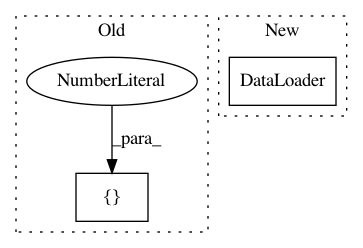

7dd73c6f95d6137a713105c875dde4a5b71844df,examples/classification.py,MNISTInputLoader,__init__,#MNISTInputLoader#Any#,16
Before Change
from tensorflow.examples.tutorials.mnist import input_data
self.mnist = input_data.read_data_sets("MNIST_data", one_hot=True)
self.x = tf.placeholder(tf.float32, shape=[batch_size, 28, 28, 1])
self.feed_y = tf.placeholder(tf.float32, shape=[batch_size, 10])
self.y = ((2*self.feed_y)-1)
After Change
])),
batch_size=args.batch_size, shuffle=True, **kwargs)
test_loader = torch.utils.data.DataLoader(
datasets.MNIST(dataset_folder, train=False, transform=transforms.Compose([
transforms.ToTensor()
])),
batch_size=args.batch_size, shuffle=False, **kwargs)
self.train_loader = train_loader
self.test_loader = test_loader
self.train_dataset = iter(self.train_loader)
In pattern: SUPERPATTERN
Frequency: 3
Non-data size: 2
Instances
Project Name: HyperGAN/HyperGAN
Commit Name: 7dd73c6f95d6137a713105c875dde4a5b71844df
Time: 2020-07-10
Author: mikkel@255bits.com
File Name: examples/classification.py
Class Name: MNISTInputLoader
Method Name: __init__
Project Name: eriklindernoren/Keras-GAN
Commit Name: 1bd27beaa46b62a6c7bf402e2ca3ddd013c3f050
Time: 2018-02-18
Author: eriklindernoren@gmail.com
File Name: cyclegan/cyclegan.py
Class Name: CycleGAN
Method Name: __init__
Project Name: williamFalcon/pytorch-lightning
Commit Name: 1aac481957dda7b9873a4204b5c96cb4e2c205c6
Time: 2021-03-02
Author: thomas@grid.ai
File Name: tests/models/test_tpu.py
Class Name:
Method Name: test_model_tpu_early_stop